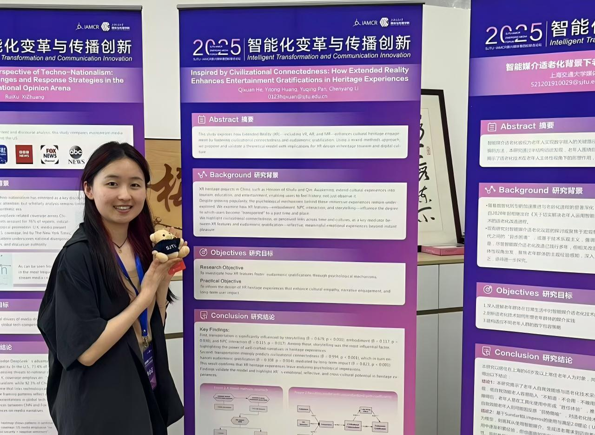

About Me
Hi, I'm Cherry.
Welcom to my website!
I am a Master’s student in Emerging Media Studies at Boston University. I care about emerging technologies and people's psychologcial responses. My work mainly center on two areas: (1) gender issues: how AI and algorithm influence gender representations and public perceptions of specific groups of women (e.g., grassroots mom influencers, female politicians), and (2) meaningful entertainment: how immersive technologies such as VR/AR/XR shape cultural participation and support psychological well-being.

Before BU, I studied Cultural Industries Management with a minor in Applied Psychology at Shanghai Jiao Tong University. Looking ahead, I plan to pursue a PhD in communication, driven by my passion for research and my commitment to advancing equity and promoting well-being in society.
Research
-
Research Skills
-
Research Projects
-
Project 1 - AI Generated Content & Counter-Stereotypes
Experimental projects examining how AI-generated figures influence audience implicit gender-roles attitudes.
-
Project 2 - Immigration Debates on U.S. Social Media
Assisting with coding and analysis of large-scale social media data to understand political polarization, misinformation patterns, and thematic framing in online immigration discourse.
-
Project 3 - New Media Use & Chinese Women’s Well-being
Contributed to analyze natioanl survey data and statistical modeling examining how new media use shapes Chinese married women’s mental health, with a focus on marital quality as a mediating factor.
-
Project 4 - Emerging Technology & Entertainment Experiences
Participated in survey desiagn, data collection, data analysis, paper draft, exploring (1) how cultural participation (active v.s. passive) influence psychological well-being through transendence traits; (2) how immersive technologies enhance entertainment gratifications and cultural engagement.
-
Publications
-
Peer-reviewed Journal Publications
-
Peer-reviewed Conference Presentations
Professional Experience
-
Professional Skills
-
Internships
Involved in user recruiment, experiment data collection and data visualization about several cosmetic products, such as L'Oréal facial cream.
Collaborated with medical and communication teams to enhance patient-centered engagement strategies.
-
Student Leaderships
(1) Managed the museum’s official website and media platforms, publishing timely news and announcements. (2) Designed promotional materials, produced photos and videos to document and publicize museum events.
Coordinated volunteer teams, liaised with partner organizations, managed event logistics. Successfully organized 10+ volunteer events
-
Volunteer Works


Travelling
I am from the Tibetan Autonomous Prefecture of Gannan (甘南藏族自治州), a region in northwestern China known for its breathtaking plateau landscapes and cultural richness. Growing up in a place where grasslands stretch toward the horizon, and where Tibetan and Han traditions coexist in everyday life, I developed a natural curiosity for cultures, people, and stories beyond my hometown.

-
Exploring Europe
During my semester in the Netherlands, I explored many corners of the country—from museums and canals to small towns and nature reserves. Beyond the Netherlands, I visited France, Germany, Switzerland, Norway, Spain, Portugal, and Belgium, each offering its own unique histories, architectures, and ways of living. These travels deepened my interest in how media, culture, and everyday experience shape one another across societies.


More journeys to come.
Future Goal
In the long term, I hope to pursue a research-oriented career at the intersection of media psychology, political communication, and technology studies.
I am committed to pursuing:
-
PhD Path
-
Research Goals
-
Social Impact
I really welcome collaboration with researchers in different disciplines. If you'd like to discuss my research interests, please reach out:
hqx123@bu.edu.